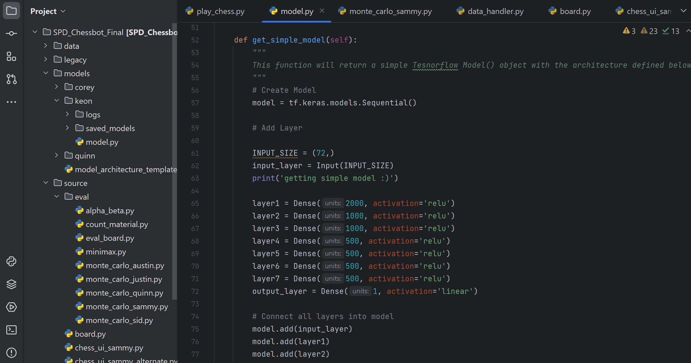

My Projects
Personal Portfolio Website
Designed and developed a visually appealing personal portfolio website using React, showcasing my proficiency in web development and featuring a collection of my projects and skills. Click on the image above!

Chess AI
Utilized Tensorflow library to train AI models in Chess strategy. Implemented Monte Carlo Tree Search recursive prediction algorithm for move selection. Employed algorithmic stepping and pruning into implementation to minimize data usage and maximize efficiency. Click on the image above!